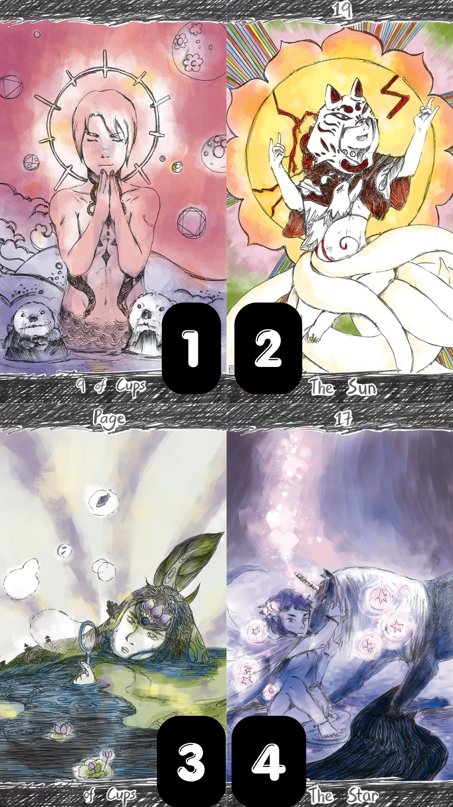
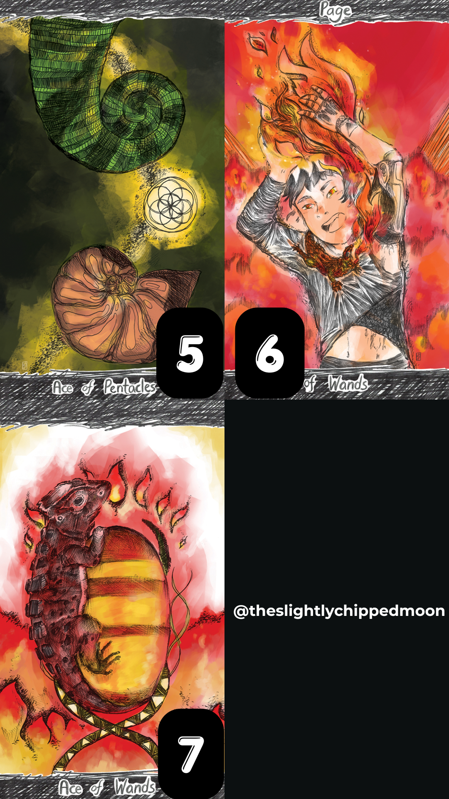
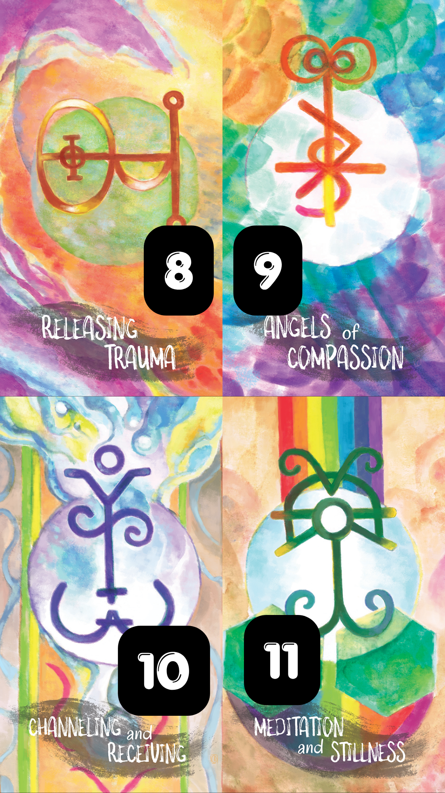
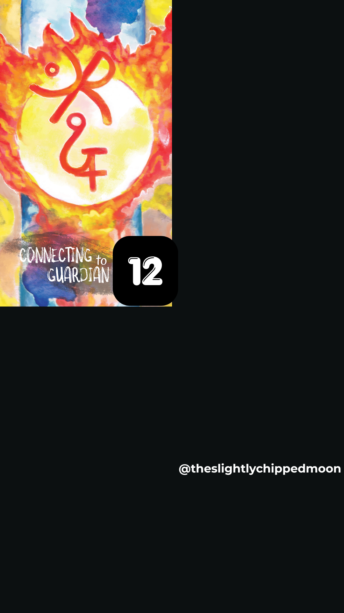
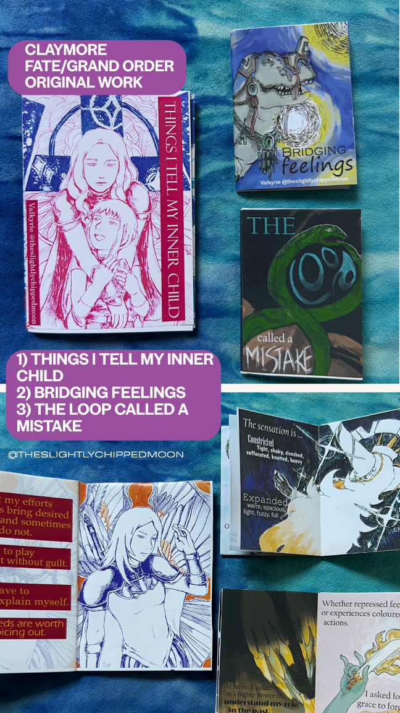
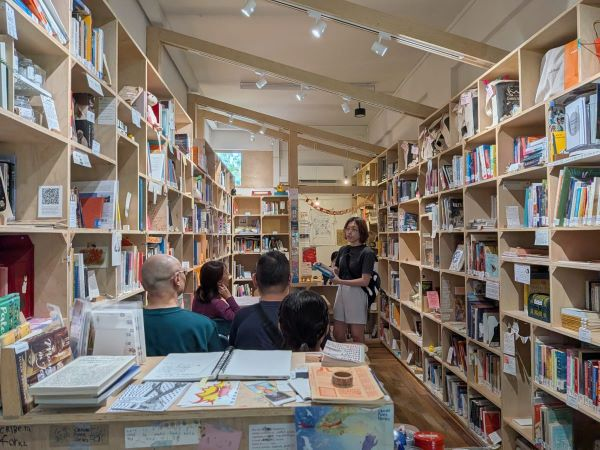

About Valkyrie
My artistic journey began at the tender age of 4.
A self-taught artist, I found inspiration in anime and manga, particularly the mesmerizing world of Sailor Moon. I love Sailor Stars by the way!
Fate intervened when I mistook an astrology book for an astronomy one, which led me into the world of spirituality, a journey I have embraced ever since.
I specialize in tarot/oracle/Akashic Records readings (along with a smattering of runes, plant spirits and astrology/fixed stars practices) and Theta healing. I believe in widening my boundaries of knowledge and applying what I learn to the mundane world.
And this is why I dabble in so many fields...
I begun my journey in 2007 and I have been doing tarot readings professionally since 2018.
What I’m Doing Now
🌙Kindred Tarot meetups : Infrequent attendee nowadays, but I vouch for the openness and kindness you will find from the group, whether you are a beginner or an experienced practitioner.
🌗Still offering readings! Chat with me via Instagram!
My Works
Your support is deeply appreciated! 🌔

Tarot of Passing Showers
The Tarot of Passing Showers was born from the encouragement of a fellow tarot-tuber from the online tarot community.
This deck combines influences from the Rider-Waite and Thoth systems, with manga and the dark October drawing challenges.
Ballpoint pens and markers were mediums for the lineart, after which they were painted digitally.
Make friends with that monsters in this deck, so that monsters will never be able to hurt you as badly again.
Contains 78 cards, 70 * 120mm.
Buy the deck (Make Playing Cards)
Buy the deck (Printer’s Studio)
Flipthrough

Some images from the deck


Oracle of Shifting Degrees
This is a deck of 35 sigils, for readers to focus their intention on the answer and shift to their ideal states.
Surreal and colourful, this deck was developed during the pandemic. Artworks were painted with ink, water colours and colour pencils, then enhanced digitally.
70 * 120 mm.
Buy the deck (Make Playing Cards)
Buy the deck (Printer’s Studio)
Flipthrough

Some images from the deck


Zines
1) Bridging feelings: Psychological first-aid as told by the Deinos of Fate/Grand Order
2) Things I tell my inner child: A handbook of tiny reminders as told by the beautiful witches of Claymore
3) The loop called a mistake: dealing with bad thoughts
Buy the digital zines (Ko-fi)
Buy the digital zines (Fybe)
Past events
🌕Randamu World 2026: 15/16 Aug 2026 at Suntec Convention Hall 401/402, selling my art and tarot readings.
🌓Had a shelf at casual poet library: Visit them to soak in the atmosphere and connect with like-minded people there. Also shared on fixed stars (astrology) and did tarot readings on 25 July 2026 (Sat), 2 - 4pm.

🌒Tarot reading event with Old Chang Kee: 3 Feb 2024
🌔Tarot reading event at Tampines East Comunity Club: 9 Dec 2023
Connect with me on:
Support me: